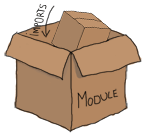

Modules
什么是模块

使用交互式的shell被认为是动态语言非常重要的一部分。通常对于测试各种代码是非常有用的。Erlang中绝大部分的基础数据类型都不需要编写一个文件来使用。 你可以丢掉键盘，出去打一天球，但是如果你在这停下来，你将是个非常差的Erlang程序员。代码需保存起来，以备将来使用！
这就是模块的作用。模块是将很多函数放到同一个命名空间，存储到一个文件中。
另外，所有的函数都需要在模块中定义。你已经使用了模块，但是你没有察觉它。
前面章节提到过BIF，像 hd和tl，实际上它们属于erlang这个模块，
同样所有的数学，逻辑和布尔操作符都属于这个模块。
和其它的函数不同的是，当你使用Erlang的时候，属于erlang这个模块会被自动引入。
剩下的函数，你就需要用 Module:Function(Arguments)这种形式来调用了。
你可以自己尝试下：
1> erlang:element(2, {a,b,c}).
b
2> element(2, {a,b,c}).
b
3> lists:seq(1,4).
[1,2,3,4]
4> seq(1,4).
** exception error: undefined shell command seq/2
List模块中的seq函数并没有被自动引入，但是element就被自动引入了。
’undefined shell command‘这个错误是因为shell在查找像f()这样的shell命令，并且没有找到该命令的时候产生的。
erlang模块中有些不常使用的函数，并不会自动引入。
按道理来说，你应当将功能类似的函数放到一个模块中。
列表相关的操作都被放到了lists模块中，关于IO的操作（输出到终端或写文件）都被放到了io模块中。
你将遇到唯一一个不遵守前面提到的规则的模块是erlang模块，因为它包含了数学，转换，多进程和调整虚拟机相关的设置等。
它们除了都是内置函数就没有其它的共同点了。
你应当避免创建一个像erlang模块的模块并且要专注于清晰的逻辑分层。
模块声明

当编写一个模块的时候，你能声明两种东西： 函数和属性. 属性是模块用来描述它自己的元数据，其中包括模块的名字，什么函数是对外可见的和代码编写者等。 这种元数据是非常有用的，它能告诉编译器该如何编译同时它可以让人们从编译过的代码中得到有用信息而不需要去看代码。
有大量的模块属性在全世界的Erlang代码中使用，事实上，你可以根据你的喜好定义你自己的属性。
(There is a large variety of module attributes currently used in Erlang code across the world;
as a matter of fact, you can even declare your own attributes for whatever you please.)
这里有很多预先定义好的属性，在代码中，它们比别的属性更加常用。所有这些模块属性都使用这种写法-Name(Attribute).。
为了让你的模块能编译，它们当中唯一必须的是：
- -module(Name).
-
这始终是一个文件的第一个属性（和语句），因为一个很好的理由：
它是这个模块的名字，并且这个Name是一个原子。
这个就是你用来从别的模块调用函数的名字。
这种调用的写法是
M:F(A)，其中M是模块名，F是函数，A是参数。
是时候让我们写一些代码了！我们第一个模块将会非常简单且无用。
打开文本编辑器输入下面这些，然后把它们保存到useless.erl中：
-module(useless).
这一行文本是一个有效的模块。 真的！当然没有函数它很没用。让我们先决定什么函数从我们的‘useless’模块中导出。 为了做这事情，我们将用另一个属性：
- -export([Function1/Arity, Function2/Arity, ..., FunctionN/Arity]).
-
这是用来定义该模块什么函数可以由外界被调用。
它需要一个有元数的函数列表。(It takes a list of functions with their respective arity.)
函数的元数是一个整数，代表有几个参数将传入函数。
这个是非常重要的信息，因为在同一个模块中，我们可以定义同名但元数不同的函数。
函数
add(X,Y)和add(X,Y,Z)被认为是不同的，分别用add/2和add/3来表示。
注意： 导出的函数代表模块的接口。定义一个只导出必要函数的接口是非常重要的。(It is important to define an interface revealing strictly what is necessary for it to be used and nothing more.) 这样做，可以让你随意优化其它的［隐藏的］实现细节，而不至于因为优化导致其它依赖你代码的模块不工作。
我们无用的模块将导出第一个有用的函数叫‘add’，它将接受2个参数。
-export属性将被添加到模块的声名中：
-export([add/2]).
接着，让我写这个函数：
add(A,B) ->
A + B.
函数的语法是Name(Args) -> Body.，其中Name是一个原子，
Body是用逗号分割的多个Erlang表达式。函数以句号结束。Erlang并不使用‘return’关键字。
‘Rerturn’是没用的！取而代之，函数的最后一个逻辑表达式所返回的值将会返回给调用者。
添加下面的函数（为什么，因为每个教程都会有一个‘Hello world’的例子！即便在第四章！），
并且不要忘记将它添加到-export属性中。
%% Shows greetings.
%% io:format/1 is the standard function used to output text.
hello() ->
io:format("Hello, world!~n").
我们从这个函数可以看到，注释单行是用%符号开头（使用%%完全是风格问题）。
hello/0函数同样展示了怎么从外部模块调用模块内的函数。在这个场景,就像注释里面写的，
io:format/1是一个标准的输出到文本的函数。
最后一个添加到模块中的函数，使用了add/2和hello/0：
greet_and_add_two(X) -> hello(), add(X,2).
不要忘记在导出列表中添加greet_and_add_two/1。
因为是在同一个模块中声名的函数，所以对hello/0和add/2的调用，并不需要在前面添加模块的名称。
你是受否想让调用io:format/1像调用add/2或其它这个某块中定义的函数一样，
你可以在文件开头添加以下模块属性： -import(io, [format/1]).。
然后你就可以直接调用format("Hello, World!~n").。
更常见的，-import属性遵循以下原则：
-import(Module, [Function1/Arity, ..., FunctionN/Arity]).
程序员在写代码的时候，导入函数并不比程序员的快捷方式强。
(Importing a function is not much more than a shortcut for programmers when writing their code.)
Erlang程序员非常不鼓励使用-import属性，因为有些人发现它降低了代码的可读性。
在io:format/2和io_lib:format/2同时存在的情况下。
为了找出使用了那个函数，就要到文件头去看那个模块被引入。
所以，保留模块名被认为是更好的做法。通常，你会看到唯一引入的函数是从列表模块：
列表模块中的函数比别的模块中的函数使用频率更高。
你的useless模块将会看起来像下面的文件：
-module(useless).
-export([add/2, hello/0, greet_and_add_two/1]).
add(A,B) ->
A + B.
%% Shows greetings.
%% io:format/1 is the standard function used to output text.
hello() ->
io:format("Hello, world!~n").
greet_and_add_two(X) ->
hello(),
add(X,2).
We are done with the "useless" module.
我们完成了"useless"模块。你现在可以将它保存到useless.erl里。
‘.erl’是标准的Erlang代码扩展名，文件名应该定义在-module属性中的模块名，加上‘.erl’扩展名。
在展示如何编译模块，并最终尝试所有激动人心的函数前，我们将看到如何定义和使用宏。
Erlang的宏和C的‘#define’语句非常相似，主要用于定义短函数和常量。
它们是用文本表示的非常简单的表达式，在代码被编译到VM前它将被替换掉。
这类宏主要用来避免潜伏在你模块中那些魔法数值。
宏定义以-define(MACRO, some_value).形式定义为模块属性，并且在模块中的任何函数内用?MACRO来引用。
‘函数’宏可以这样来写-define(sub(X,Y), X-Y).，并且可以通过 ?sub(23,47)来使用，
在编译的时候编译器会替换为23-47。有些人会使用更复杂的宏，但是基础的语法是一样的。
编译代码
Erlang代码都是被编译成字节码供虚拟机使用。
你可以在很多地方调用编译器：在命令行中可以用$ erlc flags file.erl，
在shell或者模块中可以用compile:file(FileName)，在shell中可以用c()等等。
是时候尝试编译我们的useless模块。打开Erlang的shell，输入：
1> cd("/path/to/where/you/saved/the-module/").
"Path Name to the directory you are in"
ok
默认情况下，shell只寻找同目录下的文件，这个目录一般是标准库的目录和Erlang启动的文件夹：
Erlang的shell定义了一个cd/1命令，用来告诉Erlang进行目录切换，这样浏览我们的文件就不那么麻烦了。
Windows用户记得要用正斜杠。当这些都完成了，执行下面的命令：
2> c(useless).
{ok,useless}
如果你看到别的信息，确认是否在正确的文件夹下，文件名是否正确，并且你的模块中没有错误。
一旦你成功编译代码，你会看文件夹下除了useless.erl还新增加了useless.beam文件。这个就是被编译过的模块。
让我们尝试我们第一个函数：
3> useless:add(7,2). 9 4> useless:hello(). Hello, world! ok 5> useless:greet_and_add_two(-3). Hello, world! -1 6> useless:not_a_real_function(). ** exception error: undefined function useless:not_a_real_function/0
函数都如预期那样工作了：add/2将两个数相加，hello/0输出”Hello, world!“，greet_and_add_two/1同时做了前面两个函数的事情！
当然，你也许会问hello/0在完成输出后为什么会返回‘ok’。
这是因为Erlang的函数和表达式必须总是返回某个值，即便在其它语言中这不是必须的。
所以，io:format/1返回‘ok’表示一切正常，没有错误。
第6个表达式显示一个错误告诉我们某个函数并不存在。 如果我们忘记导出某个函数，当你要尝试调用该函数的时候，这个错误信息就会显示出来。
注意： 如果曾经你想知道‘.beam’的含义，‘.beam’实际上代表Bogdan/Björn's Erlang Abstract Machine，Erlang虚拟的名字。 其它的Erlang虚拟机也存在过，并且这已经不再被使用已经成为历史了： JAM（Joe's Abstract Machine），一个受到Prolog's WAM影响的早期虚拟机， 它尝试将Erlang编译成C，再编译成本地代码。 基准测试表明从这个实现中只有一点性能提升并且该想法已经被放弃了。
Erlang有很多编译标志来控制模块的编译。 你可以从Erlang文档中找到这些编译标志。 常用的标志有：
- -debug_info
- Erlang的工具像调试器，代码覆盖和静态分析工具等将使用模块的调试信息来工作。
- -{outdir,Dir}
- 默认情况下，Erlang的编译器将在当前目录中创建‘beam’文件。 这个标志将让你选择编译的文件放在何处。
- -export_all
- 这个标志将忽略
-export模块属性，并将导出所有的函数。 这个主要用于测试和开发新的代码，但是你不应当在生产代码中使用。 - -{d,Macro} or {d,Macro,Value}
- 在模块中定义一个宏，其中Macro原子。 这个主要用于单元测试，确保每个模块中的测试函数能正确的被创建和导出。(This is more frequently used when dealing when unit-testing, ensuring that a module will only have its testing functions created and exported when they are explicitly wanted.) 默认情况下，如果不定义元组的第三个元素Value默认为‘true’。
为了一些标志编译useless模块，我们可以像下面这样做：
7> compile:file(useless, [debug_info, export_all]).
{ok,useless}
8> c(useless, [debug_info, export_all]).
{ok,useless}
你可以在模块内定义编译标志当作模块属性。 从表达式7和8可以获得相同的结果，我们可以将下面几行添加到模块中：
-compile([debug_info, export_all]).
然后只要编译，就能和你手工指定编译标志的结果一样。 现在，我们可以编写函数，编译和执行，是时候看我们能走多远了！
注意：
另一个选项是将Erlang编译成本地代码。
本地代码不支持所有的平台，在所支持的平台上我们的程序会有一定的性能的提升（根据传闻，会有20%的性能提升）。
为了编译成本地代码，你需要使用hipe模块，并用下面的方式调用：
hipe:c(Module,OptionsList).，当然在shell中你使用c(Module,[native]).也可以得到相似的结果。
注意生成的.beam将会包含本地代码和字节码，并且本地代码是不可以跨平台的。
更多关于模块的知识
在继续学习更多关于编写函数和有用代码的片段前，这里还有一些其它的信息将来可能会有用途，我将在这个讨论下。
首先是关于模块的元信息。我在本章的开头就提过模块属性是描述模块自身的元信息。
当我们无法得到代码时，我们怎么找到这些元信息？
编译器会做的非常好：当编译一个模块，编译器会提取绝大部分模块属性（连同其它信息）一起被保存到module_info/0函数中。
你可以通过下面的方式看到useless模块的元信息：
9> useless:module_info().
[{exports,[{add,2},
{hello,0},
{greet_and_add_two,1},
{module_info,0},
{module_info,1}]},
{imports,[]},
{attributes,[{vsn,[174839656007867314473085021121413256129]}]},
{compile,[{options,[]},
{version,"4.6.2"},
{time,{2009,9,9,22,15,50}},
{source,"/home/ferd/learn-you-some-erlang/useless.erl"}]}]
10> useless:module_info(attributes).
[{vsn,[174839656007867314473085021121413256129]}]
上面的这个段代码告诉了我们一个额外的函数module_info/1 ，该函数可以让你获取特殊的信息。
你可以看到导出函数，导入函数（上面的例子没有！），属性（你自定义的元信息也在这里）还有编译选项和其它信息。
当你决定在你的模块中添加-author("An Erlang Champ").，它将在和vsn同一个节显示。
在生产环境中，模块属性的用途非常有限，但是你这有一些小技巧帮助自己：
我为本书编写了一些注释函数在
测试脚本中使用，
这些脚本会让单元测试更好一些；这个脚本检查模块属性，找出注释函数并显示它们的相关警告。
注意：
vsn是一个不包含注释且自动为不同的代码版本生成唯一码。
它被一些发布用具用于代码热替换（在不停止应用的情况下升级）。
如果你想，你也可以自己定义vsn：只要在模块中添加-vsn(VersionNumber)。
另一点是关于通用的模块设计，能做到这样是最好的：避免循环依赖！ 一个模块A应当避免调用一个调用模块A的模块B。 这种依赖通常最终使代码维护困难。实际上，即便不是循环依赖，依赖太多模块也是让维护变困难。 你所能想到的最后一件事情是，当你半夜醒来发现一个疯狂的软件工程师或计算机科学家想把你眼睛挖出来，就因为你写的差劲的代码。 (The last thing you want is to wake up in the middle of the night only to find a maniac software engineer or computer scientist trying to gouge your eyes out because of terrible code you have written.)
同样的原因（维护者和你恐惧的眼神），想相同功能的函数放在一起，被认为是非常好的实践。 启动和停止应用程序或在数据库内创建和删除记录就是这样例子。 (For similar reasons (maintenance and fear for your eyes), it is usually considered a good practice to regroup functions that have similar roles close together. Starting and stopping an application or creating and deleting a record in some database are examples of such a scenario.)
好了， 我们已经听了足够多的理论。让我们更多探索一点Erlang，好吗？